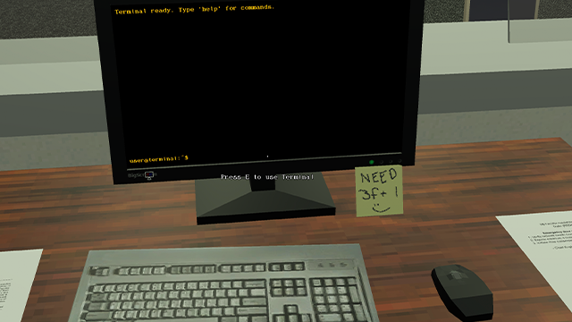
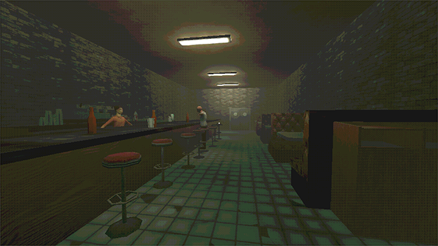
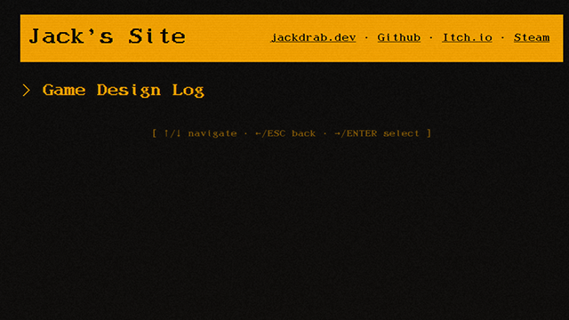

Lamport General Systems
A first-person immersive sim where you manipulate hostile Byzantine fault-tolerant networks through message interception, code injection, and physical sabotage.
Discards
A first-person narrative game built in Godot exploring identity, digital consciousness, and moral responsibility.
Stranger's Path
A short 3D first-person game built in Unity about a stranger arriving in an unfamiliar town.
Dev Log
Ongoing game design journal documenting ideation, prototyping, and development progress.